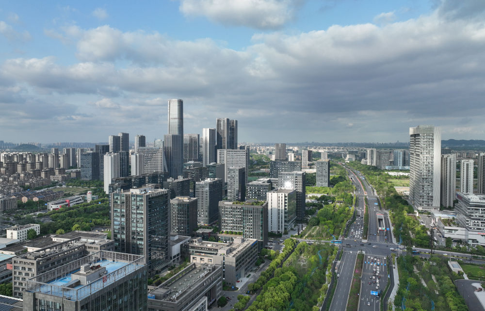
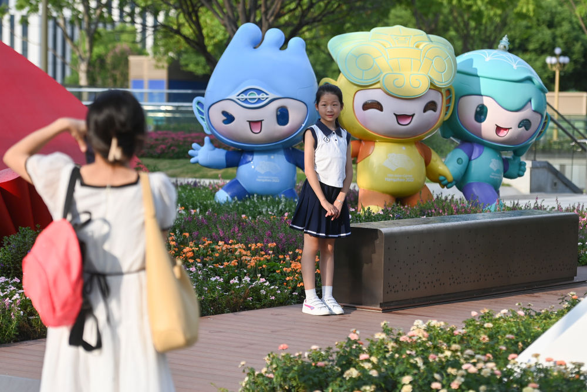
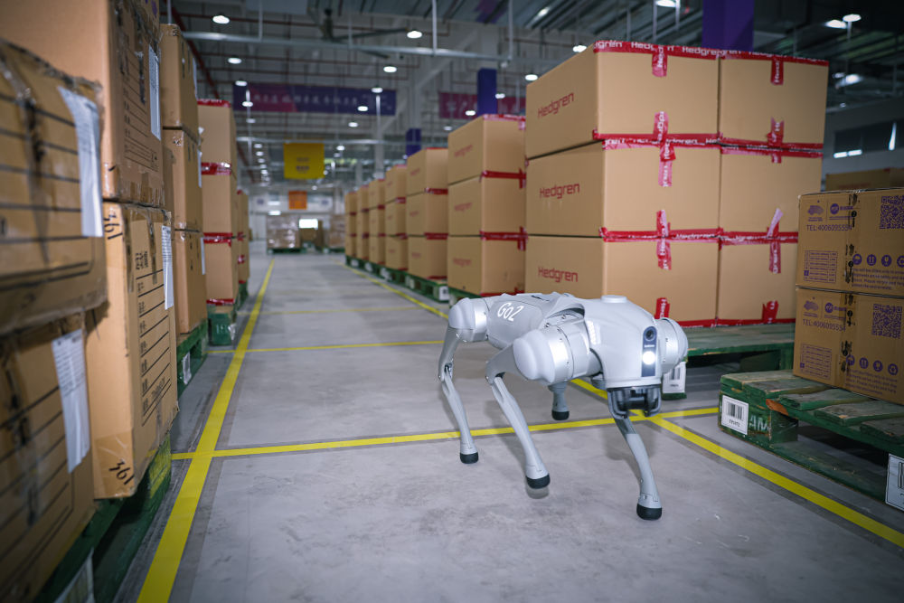
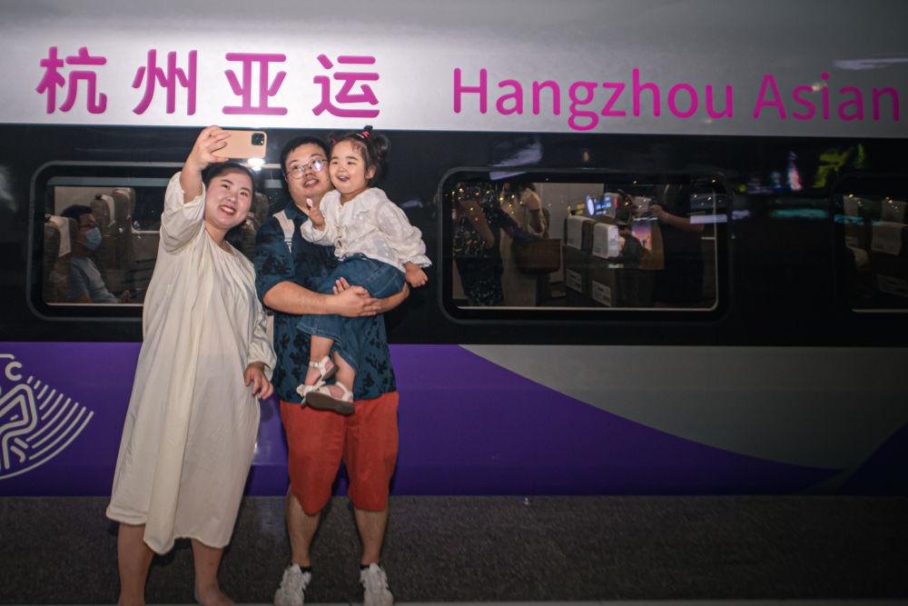

智能技术与竞技体育交相辉映，数字经济和城市建设有机融合，自主创新与时代发展携手共进……
杭州亚运会，既是一次体育盛会，也是一场科技盛宴。
透过“智能亚运”，展现的是华夏大地风起云涌的创新热潮、中国在建设科技强国道路上的铿锵步伐。

这是2023年4月20日拍摄的杭州未来科技城（无人机照片）。 新华社记者 翁忻旸 摄
西子湖畔，杭州市中心武林广场，见证了亚运会火炬传递方式的演变。
33年前，北京亚运会火炬传递活动行进到杭州站。当时的武林广场是一片草地，前来争睹亚运圣火的市民将现场围得水泄不通，很多人自愿跟随火炬手一路陪跑。
33年后，漫步在修葺一新的武林广场，人们可以随时随地掏出手机，通过“智能亚运一站通”平台，创造自己的“数字火炬手”形象，在线上传递火炬。
杭州亚运会首创的“数字火炬”，让亚运精神在互联网时空薪火相传。
再过几天，上亿名来自世界各地的“数字火炬手”，将在虚拟空间共同“点燃”亚运圣火。亚运史上首个开幕式数字点火仪式，将以一次文明与科技的结合诠释创新之力。

2023年8月21日，小朋友在位于杭州市拱墅区的武林广场与杭州亚运会吉祥物合影。新华社记者 黄宗治 摄
智能，是杭州亚运会的办赛理念、鲜明标识之一。
办赛端，体育赛事数字办赛平台“亚运钉”大显身手——赛时将实现数十万名工作人员和志愿者“组织在线、沟通在线、业务在线”大协同。“一部手机掌上办赛”，为未来筹办大型赛事树立智能化协同样本。
参赛端，数字参赛服务平台“杭州亚运行”如影随形——手机一键查询成绩，参赛人员可随时随地获得新闻资讯、翻译热线等便捷贴心的“指尖服务”。
观赛端，数字观赛服务平台“智能亚运一站通”方便快捷——打通各类亚运场景，集成各类城市服务，为观众提供购票、出行、观赛、住宿、用餐和旅游等28项服务。
一项项全球首推、首创、首用的技术应用，为杭州亚运会装上科技之眼、创新之翼，绘就体育与科技交汇的智能图景，呈现别具一格的亚运风采。
为更好地保护运动员安全，浙江工商大学文体中心体育馆铺设具有减震效果的悬浮式专业运动地板，在身体碰撞激烈的手球比赛中减少对运动员的伤害；塘栖盲人门球基地在门上安装自动感应的语音播报器，帮助视障运动员判定方位……
为更好地帮助裁判公正判罚，羽毛球馆配备20台4K高清摄像机和1台VR相机，定格运动员不同角度的动作、生成360度回放特效；运用AI裁判评分，通过AI红外追踪技术，将选手的每个动作实时转换成三维图像，对选手的各项身体参数和动作角度进行分析、打分……
科技赋能，竞技比赛将呈现更多精彩。
手臂上戴有高科技能量环；手掌、脚掌装有悬浮和喷射装置；擅长不同的运动项目……
临近亚运会开幕，在杭州街头，灵感来自于良渚古城遗址、京杭大运河、西湖的“琮琮”“宸宸”“莲莲”三只机器人吉祥物科技感十足，热情迎接来自海内外的宾客。
钱塘江畔，杭州奥体中心主体育场“大莲花”静待盛放。
走进奥体中心运营大厅，映入眼帘的是一块超级大屏，名为“大小莲花”数智管理舱。运用“数字孪生”技术，屏幕上呈现出整个奥体园区的虚拟模型。
杭州奥体中心游泳馆“藏”在馆下的水循环系统，可确保池水时时干净清澈；温州体育中心体育场在草坪下安装了18个传感器，运用数字技术实现“智能养草”；绍兴柯桥羊山攀岩中心场馆实现三维可视化管理……56个亚运竞赛场馆的科技之光竞相闪耀。
数字“智慧”，体现在亚运会筹办的一个个细节中——
通过云计算，推出杭州亚运会赛事成绩发布类系统群，意味着亚运核心系统100%“上云”，实现亚运史上首次云上转播，画面传输更快、更丰富；
借助元宇宙，推出“亚运元宇宙”平台，观众可在虚拟世界里获取亚运知识、“游览”城市、“参与”热门赛事；
部署“5G-A”，从奥体中心到亚运村的景观大道上，5G网络能力提升10倍。

9月13日，机器狗在杭州亚运会物流中心内执行巡检工作。新华社记者江汉 摄
数字“智能”，渗透在亚运会精细的服务保障中——
乘坐自动驾驶巴士，可以往返于德清体育中心和德清地理信息小镇篮球场两座亚运场馆；
利用无人叉车、无人扫地机、机器狗等智能化设备，能够保障亚运物资安全储备和高效调配；
开启无人机城市空中运输，可让医疗急救血液制品和急救器械等即时配送。
借助亚运会，“智能”绵延至赛场之外，浸润于城市运营与百姓生活——
在杭州拱墅运河体育公园体育馆，智能服务机器人可以充当“导游”，进行场馆导览、赛事讲解、问题解答；
在钱塘江边，长椅“升级”了无线充电功能，人们坐在江边吹风赏景时，手机就能“满血复活”；
在杭州武林商圈，既会“说话”还会“转头”的指引路牌，为游客提供更准确、便捷的导航服务……
赛事的“尽头”是生活。“智能亚运”融入城市发展肌理，开启未来生活的想象。
杭州文三数字生活街区，曾是华东地区最大的信息产业集散地之一。如今，该街区已经成为杭州元宇宙产业的先锋地。
走进亚运，赛事数字智慧服务进入“元宇宙”时代：通过AI智能、数字孪生、VR等技术，实现以虚拟人方式，沉浸、互动式地游城、观赛和竞技等；徜徉街区，市民游客可以在数字孪生舱“分身”、在AI绘画一键生成三维卡通形象、戴上AR眼镜“穿越”到古代杭州……
从“数字治城”覆盖公共交通、城市管理、卫生健康等11个领域，到以人工智能为核心，打造智慧城市和未来社区建设新样本，再到催生“体育+数字”的融合发展，探索体育、文化、娱乐新业态与沉浸空间、文旅场景的全新结合，发展线上线下互动的“体验+”消费新模式……
一场智能化的体育盛会，成为城市能级提升的一大引擎。来杭州看亚运会，可见“人间天堂”之美，亦可见“智慧城市”之新。
9月16日7时35分，G9313列车自杭州东站驶出，复兴号亚运智能动车组列车正式载客运营。
一道“虹韵紫”，穿梭于山海间，串联起杭州与宁波、温州、金华、绍兴、湖州5座亚运协办城市，携海内外宾客共赴体育盛会。
定制技术创新方案缓解列车跨越丘陵山地的颠簸感；车厢内5G+WiFi网络全覆盖，配备车内气压与温度自动调节系统；座椅基于人体工程学进行设计调整……一系列中国高铁最新技术，彰显创新中国的活力，展示流动中国的魅力。

9月16日，在杭州东站站台，乘客与复兴号亚运智能动车组列车合影留念。 新华社记者 江汉 摄
在杭州，装有OLED智慧车窗系统的地铁19号线“亚运专列”，主打未来感和科技范；在绍兴，棒球未来社区，浙江省内首条自动驾驶公交专线已进入常态化运行……
聚焦城市门户、交通枢纽、场馆周边等，一批运用新科技、满足新需求、创造新模式的现代化基础设施建成投用。
创新不止，未来可期。
火炬制造技术团队负责人俞瑜和同事们，历经两年时间研发制造亚运火炬“薪火”，对火炬燃烧系统开展了专项攻关突破，研发“风吹不熄”“雨浇不灭”等黑科技，让火炬可抵抗8级大风和暴雨。
一把“薪火”，映照中国制造的生生不息。
手执自己参与制造的亚运火炬参加传递，俞瑜难掩兴奋，“从中国制造到中国智造，火炬采用的雨水导流技术将在净水机、扫地机器人等智能设备领域发光发热”。
“薪火”相传，技术创新与制造业发展同频共振，开拓融合创新的广阔前景，焕发出高质量发展的蓬勃生机。
宁波舟山港，桥吊班大班长竺士杰多次参与传递火炬，推进智慧码头建设，他将激动的心情转化为加快推进创新技改的研发热情； “世界超市”义乌，经营户项丽莉忙于亚运订单的同时增加公司创新研发投入，让商品结构逐步向中高端转型；
……
亚运“薪火”，激荡出敢想敢试的开拓精神、创新创造的万千气象。 亚运村内，汽车无线充电设施实现即停即充；蓝天上，自主研发的生物航煤“绿色亚运”主题航班实现首航…… 创新与发展，并行不悖。 在浙江，“地球磁场模拟与监测系统”重大项目落地，推进地理信息相关学科领域走在国际前沿；数字经济创新提质“一号发展工程”全面铺开，更具活力创新力竞争力的现代化产业体系初具规模…… 放眼中国，中国空间站筑梦“太空之家”；“奋斗者”号下潜静谧深海；中国天眼极目光年之外……
从浩渺太空到未知深海、从科技实验室到广袤田野、从竞技赛场到数字新城……创新之亚运连接创新之中国，谱写出科技创新、智能引领推动经济社会高质量发展的时代强音。（记者黄玥、齐琪、唐弢、张璇）
| 编辑：王玉西 责任编辑：刘亮